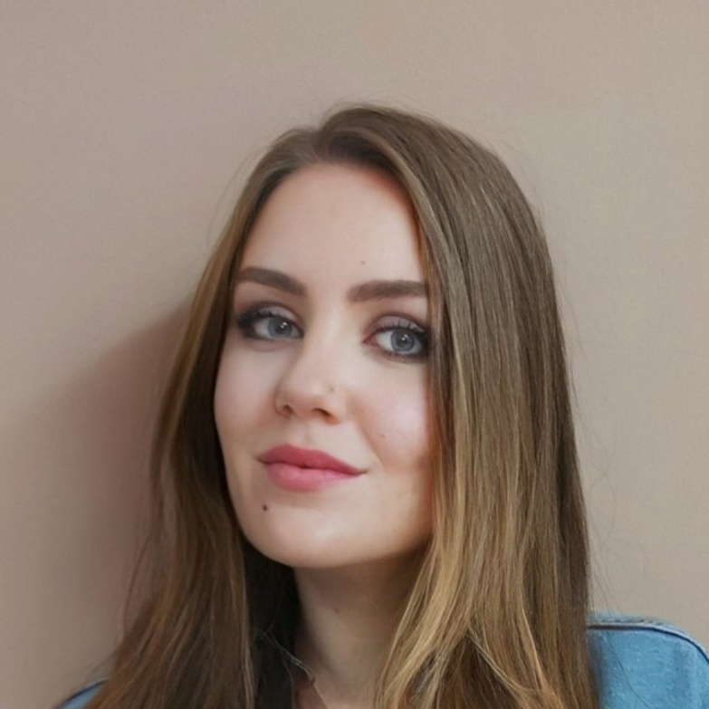

В 2011 году я закончила Белорусский Государственный медицинский университет. Проработав 10 лет врачом-педиатром, я поняла, что хочу обучиться новой специальности. Совершенно в другом направлении. Это был вызов самой себе! Так как переподготовки на базе высшего образования в сфере ИТ не существует, я начала с курсов. В 2021 году прошла 4-месячные курсы в компании "Overone".

Далее, в 2022 году я самообучалась. Изучала основы HTML, CSS, JS, Python, Django. Однако, душа лежит больше к Frontend - разработке. Буду рада попасть к вам в команду, быть полезной и далее расти в данном направлении.